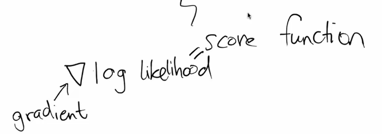

1 Intro
(This post is in progress) Part b) of the ninth lesson of fast.ai, covering the maths behind diffusion.
2 Lesson Overview
3 The topics covered, briefly
4 Lecture Notes
The maths can be beautiful, and is important for understanding papers.

X is the input variable. the superscript 0 implies there is a sequence of Xs. There is a \(X^0, X^1, X^2, ... X^N\). Each X could be an image.
q is a probability density function. We use q instead of p.
q() is a function that takes an image, X, and tell us the probability that it is a handwritten digit.
q is the magic API/black box that we described from lesson 9.
Probability density functions rarely appear in your code. They are very useful tools to work with random quantities. It allows you to represent random quantities as functions. Eventually they end as simple equations in code. Thinking of things in terms of functions is useful because mathmatians have been understanding and working with them for ages.
This is another PDF, the bar means it is conditional. Given the thing on the right is true, calculate the thing on the left.
Let’s turn the image of 8 into another image using a magic API.
Here is an distribution.
The N is for normal distribution.
The ; groups things together.
The thing on the left is what variable the probability distribution is for.
The things to the right are the parameters of this probability distribution.
In this case, it is the mean and variance of the normal distribution. We will sample random numbers from a normal distribution that has that mean and variance.
Thin tails means you look at the normal distribution at a certain place and ignore the rest.
Notice how we call the second parameter \(\Sigma\), not \(\sigma\). It is capital because it is for multiple variables/directions. Lowercase is for one variable. Lowercase sigma also represents the standard deviation. sigma^2 being the variance.
??
The capital I in the covariance. We did CLIP in lesson 9. We took the dot product of their embeddings. If we subtract the means first. Imagine we had vectors on both sides.
We’re not doing one normal distribution. We have many. One for each pixel in an image. They all have different parameters so look/are different. It’s possible to create an N dimensional space to create a surface over all the N pixel normal distributions. If a value was 0 then it means every pixel is independnt of every other pixel. We start with I, the identity matrix. If we multiply it by a matrix, we get back the original matrix. If we do a scalar, we get a diagnal matrix of that scalar. So multiplying something by IBeta is just mulitplying it by B. It’s the same as doing a scalar multiplication.
The covariance, the relations between the pixels, we expect to be 0, as unrelated.
??
Looking back at our mean and covariance parameters.
What happens for \(X^0\), if \(\beta_{t}\) = 0? we just get \(X^0\) for the mean and a 0 variance. We have a normal distriubtion with a mean of our previous? image, and a variance of 0. This is just the same image! A variance of 0 means there is no noise or anything, I guess variance is like varying, there is no varying.
For \(X^0\), if \(\beta_{t}\) = 1? We get 0 for the mean and I for the variance. An I variance implies a variance of 1. A normal distribution with (0,1), N(0,1). Our \(X^0\) turns into pure noise because none of it was transferred over (from the mean being 0) and there is noise from the variance being non zero.
Between \(\beta_{t}\) = 0 and \(\beta_{t}\) = 1, we get a output thats \(X^0\) with some noise.
The process of \(X^0\) getting more and more noisy is called forward diffusion.
The first input 8 we call \(X^0\). The first PDF takes \(X^0\) and doesnt do anything. The second PDF takes \(X^0\), and calculates \(X^1\) with it, which is more noisy. The final PDF is pure noise. We see that every successive PDF uses the previous image to calculate its image, like a chain of images. This is called a Markov Process with Gaussian transitions. Process means there is a sequence involved. Markov means that the output at time t only depends on the output at time t-1. The transition is the function that takes the time t-1 output to calculate the output at time t, so the PDF in our case.
Gaussian is the fact that the transition we do is a normal distribution. Sampling from the distriubtion means trying to find a random sample that maximises/has a high likelyhood. We have a magic API, we want to find data points that have a high probability from that API. If our distribution is Gaussian, since it’s so well understood, it’s easy to do this sampling. In other distributions, it can be hard to do this sampling.
Let’s think about this practically. Gaussian distributions are nice. Take normal noise with mean of 0 and variance of 1, this is a unit distribution. To get to another variance with any mean or variance we want, we can simply take the unit distribution and multiply it by the variance and add it to the mean.
Most software has a way to get a sample from N(0,1) and we use the transform to get the distribution we want.
We cant really sample from
But it turns out, if we have a 1000 smalls steps MPwGT that eventually goes to noise, we can represent the process of going backwards, from noise to image, in the same functional form!
p is the thing that goes backwards! q goes forwards, p goes backwards! Functional form:
P takes the current image, and calculates the previous one. We know it’s normally distributed, and we’re interested in the distribution for the image we’re calculating (the previous one). We don’t know what that distribution’s mean and variance are however.
q is the forward process. p is the backwards/reverse process. p is like finding x in a question, it’s the thing we want to figure out. We want to figure out p, more specifically, the reverse normal distribution, to find q. q is like y, the output, which is the denoised/original image.
How to find these distriubtion parameters?
We can maximise the likeihood function. Try different parameters until we find one that maximises the likelihood. We can’t do this exactly because it’s an hard integral. We have 1000s of steps we’re trying to reverse. There are going to be many distrubtion parameters for each step, so in total so many dist parameters to find… It’s a challenge.
Instead of likelihood, people talk about log likelihood. Log is used as a computational trick. Log is always increasing, because it always increases, the optimal parameters are the same for log likelihood and likelihood. log always takes products to sums. We have joint distributions that are products, and we want them as sums because therye easier to work with. The normal distr has exponential functions, and those disspear with the log.
So let’s optimise log likelihood instead: There’s a way to optimise a quantity called ELBO. It stands for evidence lower bound. Evidence is another name for likelihood. Optimising Elbo is almost as good as optimising log likelihood. We use it as a loss function to train two neural networks that predict our mean and variance of the reverse process distributions.
The ELBO loss function. We have a forward process, original to noise, figuring out the distriubtions on the way. ELBO tries to match the backwards distribution(s) we’re trying to optimise to the forward distriubtion(s). There is a specific type of function able to do this. We trying to minimise the difference between the distriubtions in the forward process and the dist in the backwards process.
We start with pure noise, keep calling p over many steps and eventually recover the original image and it’s distribution.
We can’t necceasry take an image, convert it to pure noise, then convert it back. But we can generate images of anything we want.
One more step. 2020 paper DDPM: Denoising Diffusion Probabilistic Model. They assumed the backwards function variance is just a constant, so we need not learn or find it. We assume also the step size, the variance of the noise added at each step, \(\beta_{t}\), is also a constant. We instead just predict the mean of the distriubtions.
This makes the loss just end up as the MSE of the noise. The entire problem just simplifies to become: a network takes in images, and it predicts what part of the network is noise. These assumptions result in models that produce much better images.
Jeremy said in the lesson that we want to figure out the gradient of the likelihood function. If we knew about this gradient, we could produce images with high likelihood.
The gradient:
The idea is add noise to the images we have. This decreases the likelihood on these images. We make our model learn how to get back to high likelihood images, and use this to get some kind of estimate of our gradient.
There are theroms that state that the denoising process is equbilent to learning the score function. The score function is the gradient of the log likelihood. The general idea is the same.
Denoising allows us to learn the score function
with info about the score function, we can sample from the backwards distribution.
Recap:
Start with a data distribution of images to model. Forward diffusion adds noise to the model. We added noise in a specific way, so the reverse process has the same functional form. We already know how to train a neural netowrk using ELBO for this. Then we can use simplifying assumptions which end up the loss just end up as the MSE of the noise And another way to think about with is the score function approach, the gradient of the log likelihood.
5 Useful maths resources
- Maths cheat sheet https://ourway.keybase.pub/mathematics_cheat_sheet.pdf and wikipedia https://en.wikipedia.org/wiki/Glossary_of_mathematical_symbols#Other_brackets page for maths notation.
- pix2tex to convert images of equations to latex https://github.com/lukas-blecher/LaTeX-OCR
- Anki deck for Greek letters that are used in science and maths https://ankiweb.net/shared/info/2118139507
- Detexify web page to draw symbols to see their latex
6 Links
- As I am doing this course as it is released privately live, I cannot share links to the lesson.